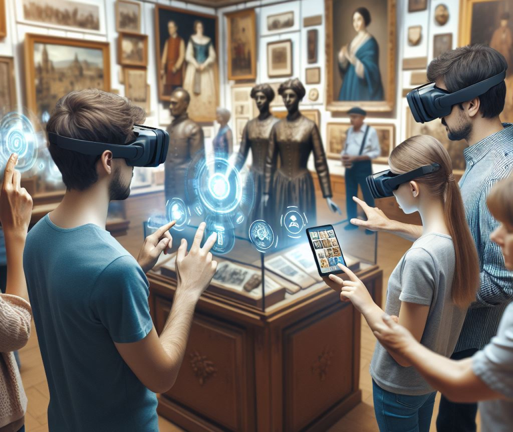
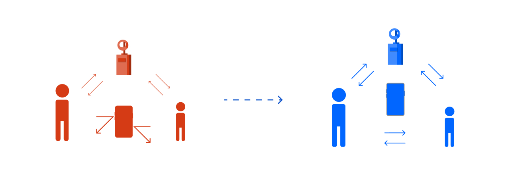
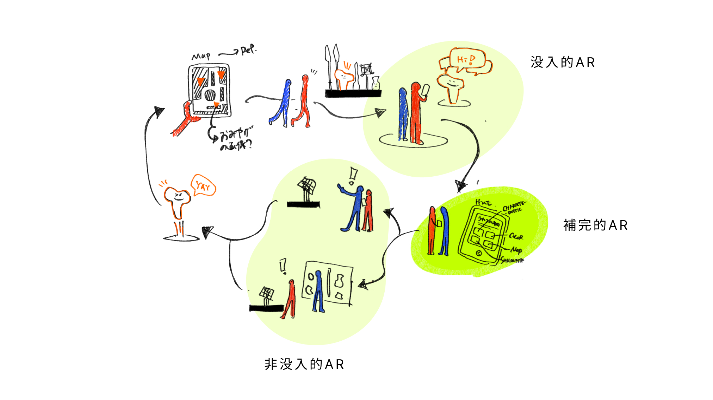
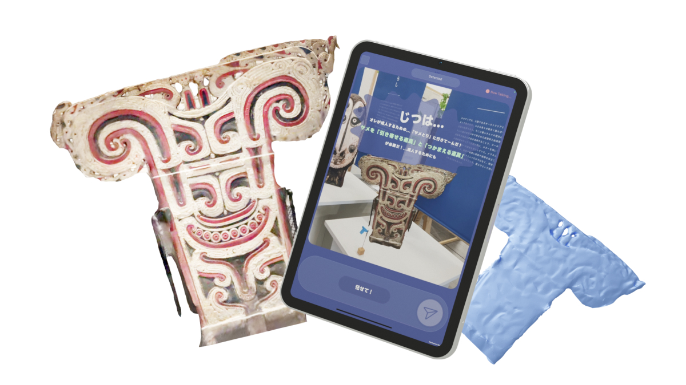
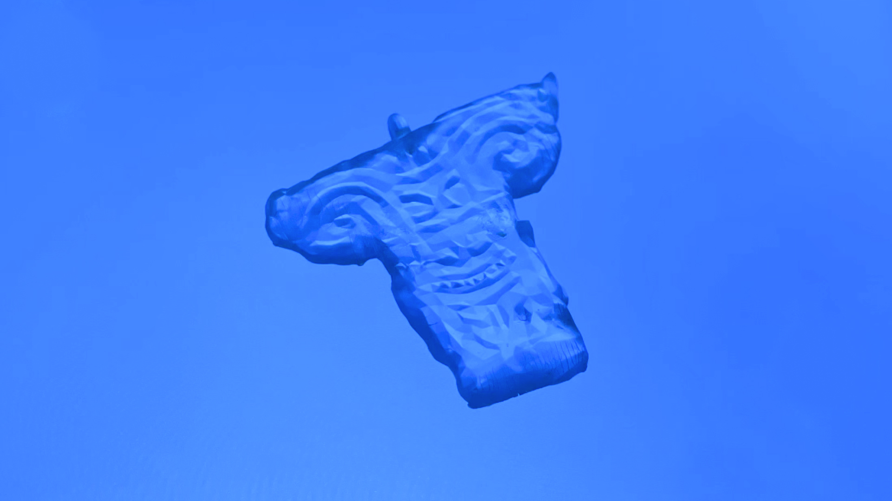
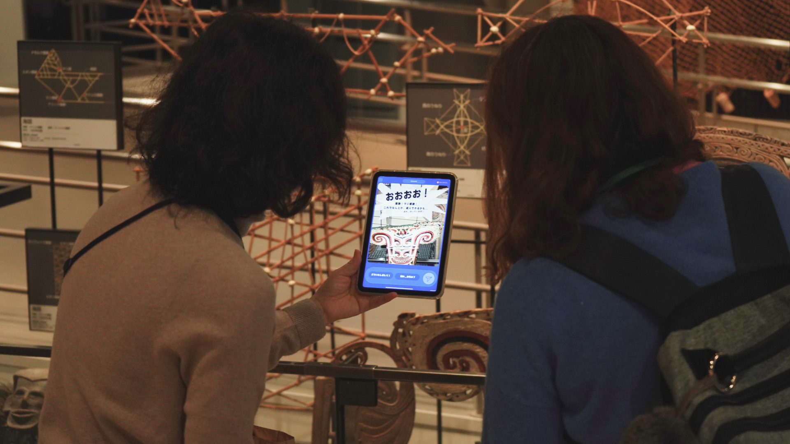

博物館の伝統的な展示方法では、貴重な展示物の保護が優先され、来館者との直接的な相互作用が制限されてきた。このアプローチは、特に子供たちの興味を引くことを難しくし、近年のインタラクティブな体験への需要増加に十分に応えられていない。
これらの課題に対応するため、多くの博物館が拡張現実（AR）技術の導入を進めている。AR技術は、モバイル端末を通じて展示物にデジタル情報を重ねることで、より理解しやすく、アクセスしやすい展示を実現している。この技術により、来館者は展示物とより深く関わることができるようになっている。

しかし、
AR技術の導入は新たな課題も生み出している。パーソナルな特性を持つモバイル端末の使用により、来館者同士の社会的相互作用が阻害される可能性がある。さらに、開発される体験の多くが個人利用を前提としており、集団での体験を考慮していないものが多いことが現状。
この状況は、博物館体験における重要な側面を見落としている可能性がある。来館者は情報、共有された信念、意味の構築のために互いを利用する。グループ内での会話/協働を促進することは、博物館での利用者の学習体験を大きく向上させる可能性を持つ。
したがって、AR技術がもたらす個人と展示品との相互作用の強化と、来館者同士の社会的相互作用のバランスを慎重に考慮する必要がある。博物館本来の社会的学習の場としての機能を強化することができる。展示とのインタラクションと社会的相互作用のバランスを取ることで、より豊かで効果的な博物館体験が見えてくるのではないだろうか。

フィールドは、
国立民族学博物館にご協力いただき、その中のオセアニア展示とした。オセアニアカヌーを中心に、仮面がずらりと並ぶ素敵な展示空間。
博物館体験は、興味を持ち、主体的に情報を収集し、知識を結びつけ、他の人に共有するプロセスだと思う。この過程においてARをいつ、どのように使うか考えた時、観察の段階によってARの提示情報を切り替えることで、協力観察を促す方法を考えた。3つの段階に分けて定義した：
興味獲得: 「没入AR」 → 探索: 「補完的AR」 → 知識収集: 「非没入AR」

ヒトは多様であるため、集団観察を促す場合には、この多様性をうまく使えば活かしたいと考えた。そこで、興味の違い、身長の差、年齢の違いなどから、個々が観察する場所が異なることを活かし、探索体験に反映させた。


